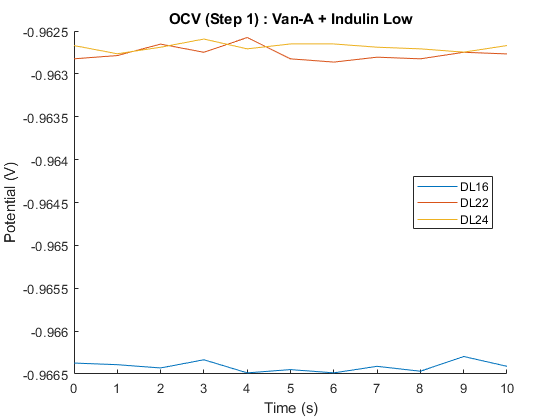
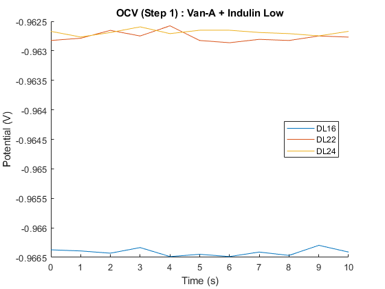
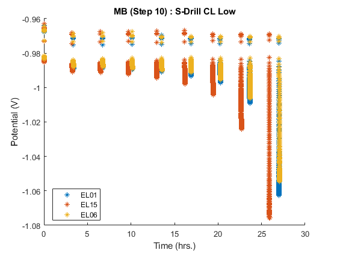

Contents
- EIS Detailed Summary
- RUN OCV PROCEDURE
- 1. OCV
- 1. OCV Averages
- 3. OCV
- 3. OCV Averages
- 5. OCV
- 5. OCV Averages
- 8. OCV
- 8. OCV Averages
- RUN CA PROCEDURE
- 2. CA
- RUN LSV PROCEDURE
- 4.1 LSV Plots
- 4.2 LSV Data analysis
- Find the current @ fVoltage for each replicate of every formula
- LSV Average Plot
- RUN MB PROCEDURE
- 7.1 MB PLOTS
- 7.2 MB Data Analysis
- 10.1 MB PLOTS
- RUN PEIS PROCEDURE
- 6. PEIS
- 9. PEIS (Default view)
- 9. PEIS (Zoomed View)
- RUN GCPL PROCEDURE
- 11. GCPL
EIS Detailed Summary
This document contains the Carbon-Lignen Phase 2 summary graphs and data analysis.
RUN OCV PROCEDURE
1. OCV
Define nProcess
 
 1. OCV Averages
3. OCV
Define nProcess

3. OCV Averages
5. OCV
Define nProcess
5. OCV Averages
8. OCV
Define nprocess

8. OCV Averages
RUN CA PROCEDURE
2. CA
Define x and y variables

RUN LSV PROCEDURE
4.1 LSV Plots


4.2 LSV Data analysis
The data analysis that we want. This will also include some graphs and whatnot.
Find the current @ fVoltage for each replicate of every formula
Create the excel file
Current at -1.5 V for formula Van-HT High (Control) (Cup ID = AH19) of replicate 1: -88.344 mA/g Current at -1.5 V for formula Van-HT High (Control) (Cup ID = AH13) of replicate 2: -105.936 mA/g Current at -1.5 V for formula Van-HT High (Control) (Cup ID = AH17) of replicate 3: -92.380 mA/g Current at -1.5 V for formula Van-HT Low (Cup ID = AL06) of replicate 1: -215.397 mA/g Current at -1.5 V for formula Van-HT Low (Cup ID = AL09) of replicate 2: -175.649 mA/g Current at -1.5 V for formula Van-HT Low (Cup ID = AL04) of replicate 3: -125.824 mA/g Current at -1.5 V for formula Van-A High (Cup ID = BH12) of replicate 1: -76.848 mA/g Current at -1.5 V for formula Van-A High (Cup ID = BH24) of replicate 2: -80.931 mA/g Current at -1.5 V for formula Van-A High (Cup ID = BH23) of replicate 3: -64.698 mA/g Current at -1.5 V for formula Van-A Low (Cup ID = BL18) of replicate 1: -166.004 mA/g Current at -1.5 V for formula Van-A Low (Cup ID = BL14) of replicate 2: -130.713 mA/g Current at -1.5 V for formula Van-A Low (Cup ID = BL19) of replicate 3: -129.279 mA/g Current at -1.5 V for formula Van-DCA High (Cup ID = CH01) of replicate 1: -119.591 mA/g Current at -1.5 V for formula Van-DCA High (Cup ID = CH14) of replicate 2: -102.802 mA/g Current at -1.5 V for formula Van-DCA High (Cup ID = CH07) of replicate 3: -111.193 mA/g Current at -1.5 V for formula Van-DCA Low (Cup ID = CL23) of replicate 1: -311.643 mA/g Current at -1.5 V for formula Van-DCA Low (Cup ID = CL11) of replicate 2: -256.358 mA/g Current at -1.5 V for formula Van-DCA Low (Cup ID = CL04) of replicate 3: -155.971 mA/g Current at -1.5 V for formula Van-A + Indulin High (Cup ID = DH25) of replicate 1: -51.136 mA/g Current at -1.5 V for formula Van-A + Indulin High (Cup ID = DH18) of replicate 2: -42.397 mA/g Current at -1.5 V for formula Van-A + Indulin High (Cup ID = DH07) of replicate 3: -33.025 mA/g Current at -1.5 V for formula Van-A + Indulin Low (Cup ID = DL16) of replicate 1: -202.957 mA/g Current at -1.5 V for formula Van-A + Indulin Low (Cup ID = DL22) of replicate 2: -162.305 mA/g Current at -1.5 V for formula Van-A + Indulin Low (Cup ID = DL24) of replicate 3: -103.892 mA/g Current at -1.5 V for formula S-Drill CL High (Cup ID = EH06) of replicate 1: -41.757 mA/g Current at -1.5 V for formula S-Drill CL High (Cup ID = EH22) of replicate 2: -31.519 mA/g Current at -1.5 V for formula S-Drill CL High (Cup ID = EH15) of replicate 3: -18.650 mA/g Current at -1.5 V for formula S-Drill CL Low (Cup ID = EL01) of replicate 1: -216.527 mA/g Current at -1.5 V for formula S-Drill CL Low (Cup ID = EL15) of replicate 2: -139.814 mA/g Current at -1.5 V for formula S-Drill CL Low (Cup ID = EL06) of replicate 3: -127.967 mA/g Current at -1.5 V for formula Indulin AT High (Cup ID = FH03) of replicate 1: -36.620 mA/g Current at -1.5 V for formula Indulin AT High (Cup ID = FH06) of replicate 2: -25.416 mA/g Current at -1.5 V for formula Indulin AT High (Cup ID = FH08) of replicate 3: -20.072 mA/g Current at -1.5 V for formula Indulin AT Low (Cup ID = FL20) of replicate 1: -195.324 mA/g Current at -1.5 V for formula Indulin AT Low (Cup ID = FL12) of replicate 2: -152.373 mA/g Current at -1.5 V for formula Indulin AT Low (Cup ID = FL16) of replicate 3: -126.288 mA/g -88.344024 -105.936423 -92.380230 -215.397441 -175.648839 -125.824439 -76.848159 -80.930587 -64.698373 -166.004429 -130.712773 -129.279466 -119.591466 -102.802120 -111.192690 -311.643036 -256.358481 -155.970914 -51.136226 -42.397030 -33.024860 -202.957185 -162.304645 -103.891629 -41.756742 -31.519119 -18.650269 -216.526893 -139.813648 -127.967069 -36.620304 -25.415895 -20.071590 -195.323737 -152.373304 -126.288065
LSV Average Plot
Issue: Not all the replicates have the same amount of data Solution: Find the one with the lowest amount of data
RUN MB PROCEDURE
7.1 MB PLOTS
Define x and y variables

7.2 MB Data Analysis
Final Capacity Value for formula Van-HT High (Control) (Cup ID = AH19) of replicate 1: 162.378 Final Capacity Value for formula Van-HT High (Control) (Cup ID = AH13) of replicate 2: 162.702 Final Capacity Value for formula Van-HT High (Control) (Cup ID = AH17) of replicate 3: 169.250 Final Capacity Value for formula Van-HT Low (Cup ID = AL06) of replicate 1: 158.808 Final Capacity Value for formula Van-HT Low (Cup ID = AL09) of replicate 2: 148.494 Final Capacity Value for formula Van-HT Low (Cup ID = AL04) of replicate 3: 142.895 Final Capacity Value for formula Van-A High (Cup ID = BH12) of replicate 1: 170.278 Final Capacity Value for formula Van-A High (Cup ID = BH24) of replicate 2: 159.957 Final Capacity Value for formula Van-A High (Cup ID = BH23) of replicate 3: 157.901 Final Capacity Value for formula Van-A Low (Cup ID = BL18) of replicate 1: 162.445 Final Capacity Value for formula Van-A Low (Cup ID = BL14) of replicate 2: 163.656 Final Capacity Value for formula Van-A Low (Cup ID = BL19) of replicate 3: 164.538 Final Capacity Value for formula Van-DCA High (Cup ID = CH01) of replicate 1: 158.877 Final Capacity Value for formula Van-DCA High (Cup ID = CH14) of replicate 2: 158.087 Final Capacity Value for formula Van-DCA High (Cup ID = CH07) of replicate 3: 162.297 Final Capacity Value for formula Van-DCA Low (Cup ID = CL23) of replicate 1: 153.439 Final Capacity Value for formula Van-DCA Low (Cup ID = CL11) of replicate 2: 153.906 Final Capacity Value for formula Van-DCA Low (Cup ID = CL04) of replicate 3: 149.959 Final Capacity Value for formula Van-A + Indulin High (Cup ID = DH25) of replicate 1: 156.173 Final Capacity Value for formula Van-A + Indulin High (Cup ID = DH18) of replicate 2: 154.468 Final Capacity Value for formula Van-A + Indulin High (Cup ID = DH07) of replicate 3: 154.748 Final Capacity Value for formula Van-A + Indulin Low (Cup ID = DL16) of replicate 1: 158.400 Final Capacity Value for formula Van-A + Indulin Low (Cup ID = DL22) of replicate 2: 154.705 Final Capacity Value for formula Van-A + Indulin Low (Cup ID = DL24) of replicate 3: 148.985 Final Capacity Value for formula S-Drill CL High (Cup ID = EH06) of replicate 1: 147.643 Final Capacity Value for formula S-Drill CL High (Cup ID = EH22) of replicate 2: 153.523 Final Capacity Value for formula S-Drill CL High (Cup ID = EH15) of replicate 3: 155.391 Final Capacity Value for formula S-Drill CL Low (Cup ID = EL01) of replicate 1: 158.986 Final Capacity Value for formula S-Drill CL Low (Cup ID = EL15) of replicate 2: 150.252 Final Capacity Value for formula S-Drill CL Low (Cup ID = EL06) of replicate 3: 160.180 Final Capacity Value for formula Indulin AT High (Cup ID = FH03) of replicate 1: 152.030 Final Capacity Value for formula Indulin AT High (Cup ID = FH06) of replicate 2: 159.750 Final Capacity Value for formula Indulin AT High (Cup ID = FH08) of replicate 3: 158.054 Final Capacity Value for formula Indulin AT Low (Cup ID = FL20) of replicate 1: 150.416 Final Capacity Value for formula Indulin AT Low (Cup ID = FL12) of replicate 2: 148.143 Final Capacity Value for formula Indulin AT Low (Cup ID = FL16) of replicate 3: 147.445 162.377808 162.701503 169.249621 158.808211 148.494063 142.894874 170.277660 159.956719 157.901486 162.444922 163.656439 164.538381 158.876975 158.087379 162.296968 153.438603 153.906205 149.959260 156.172565 154.468132 154.747927 158.399668 154.705064 148.985204 147.642884 153.522555 155.391116 158.985942 150.252079 160.179958 152.030407 159.749510 158.054125 150.416015 148.142506 147.445153
10.1 MB PLOTS
Define x and y variables
RUN PEIS PROCEDURE
6. PEIS

9. PEIS (Default view)


9. PEIS (Zoomed View)
RUN GCPL PROCEDURE
11. GCPL
Define x and y variables